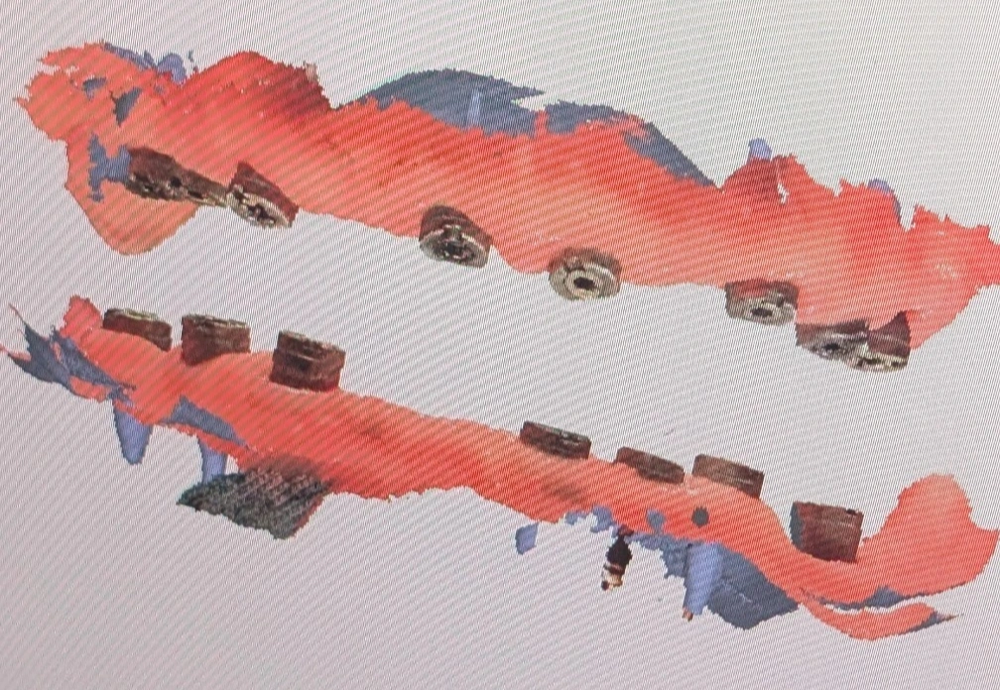

Insight 51 — Notes on Digitally Treating the Fully Edentulous Patient
Published:
Last reviewed:
فارسی

Clinical Explanation
In the digital full-arch treatment of a fully edentulous patient, I don't treat the VD captured during scanning as definitive — I regard it as an estimate confirmed with an adjusted pattern resin in the mouth; ridge parallelism is only a visual cue, and to contain the cumulative stitching error of the full-arch scan I keep the restoration segmented and low in unit count, then re-scan the checked pattern resin to obtain the final data
-
The core principle — VD is an estimate, not a certainty
In digital full-arch treatments, the most important thing I always observe is that I don't treat the VD obtained during the scan as definitive. I consider it an estimate — a reasonable starting point that is meant to be confirmed or corrected later with a physical intermediary.
My entire logic is built on this. -
Looking at ridge parallelism is only a visual cue
During the scan, to check that I haven't made a gross error in recording the VD, I look at the relationship between the upper and lower ridges. When the patient's teeth weren't extracted at widely separated times and the ridge has no severe irregularities, at a reasonable VD the upper and lower ridges are usually roughly parallel. This is a quick visual guide on the scanner's monitor or the laptop.
But I don't use this as a method for confirming VD, and I don't recommend anyone view it that way. Parallelism is more a function of the anatomy and the bone-resorption pattern of the two jaws than of the correctness of the VD — which is why it has many exceptions. For instance, in the posterior areas of this same patient, because the teeth in that region were extracted long ago, more bone resorption has occurred and the parallelism breaks down, whereas anteriorly there's no problem. So this sign merely helps me avoid a gross error; it doesn't tell me I've reached the correct VD. -
Segmenting the arch and keeping the unit count low
When I scan the full arch and the patient is fully edentulous, I never try to connect the two sides of the arch in a single piece. I keep the restorations at as low a unit count as possible; for example, the restorations of one full jaw might be split into 3 or 4 parts.
The reason is the real limitation of full-arch scanning. Stitching error accumulates along the length of the arch, so the longer the scanned region, the greater the deviation between two distant points (for example the two posterior implants on either side). When I keep the prosthesis short and segmented, this cumulative error is not amplified, and the bridges — being made smaller — have less error. Each segment only needs to be accurate over its own short span. -
Pattern resin — where the real confirmation happens
Because I regard the VD and the relationship recorded during the scan as an estimate, I always request a pattern resin. The estimate isn't so far off that the lab can't design the main abutments, so the pattern resin is fabricated on that same data.
At the next appointment I check the pattern resins in the mouth and review and adjust the VD and the relationship on them. Finally, with the adjusted pattern resin present in the mouth, I take a new scan so the lab receives enough data to fabricate the definitive crowns. The final data is no longer that first, estimated scan; it is the scan of a temporary, intermediary restoration that has been checked and corrected in the mouth. -
Key takeaway — a single root
All of the techniques mentioned come from a single root: I don't trust the raw full-arch scan on its own, and I entrust the final confirmation to a physical reference.
The content of this page is intended for the educational use of dentists and dental students.